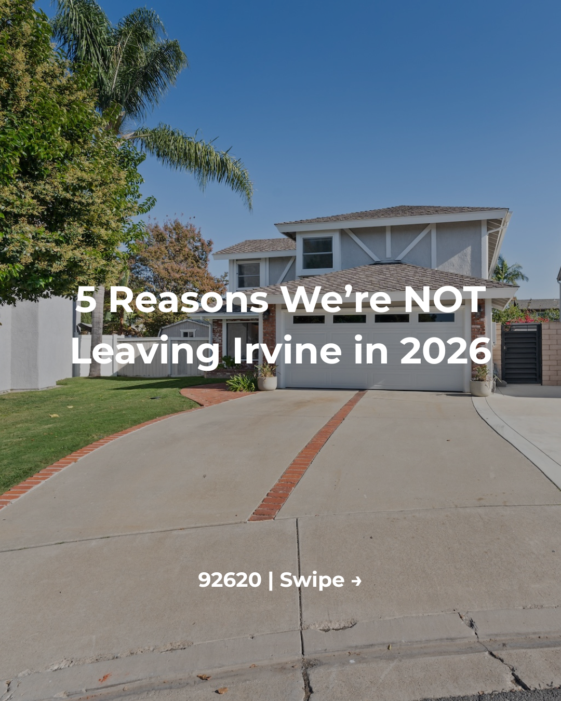
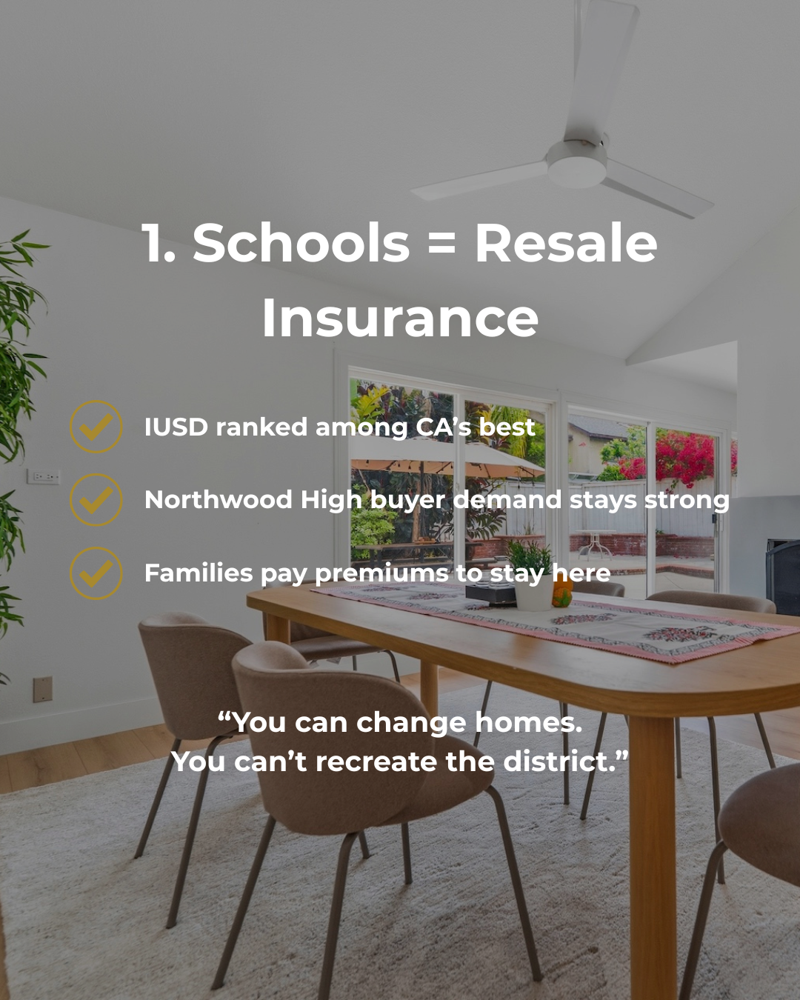
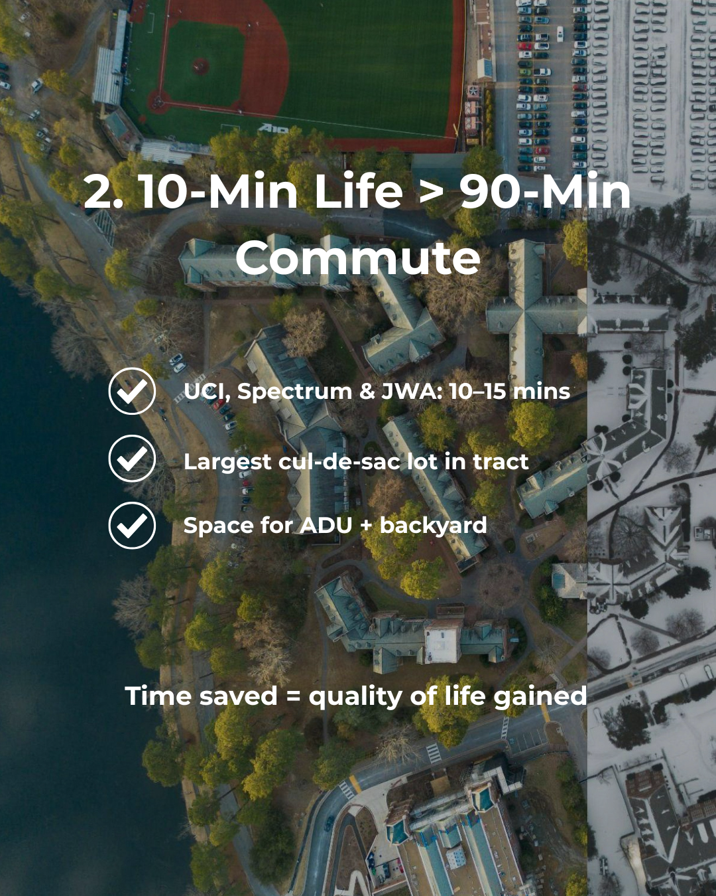
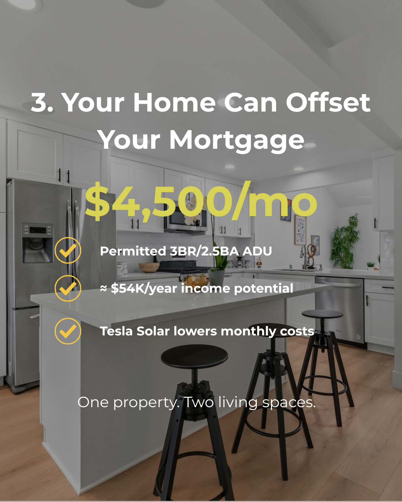
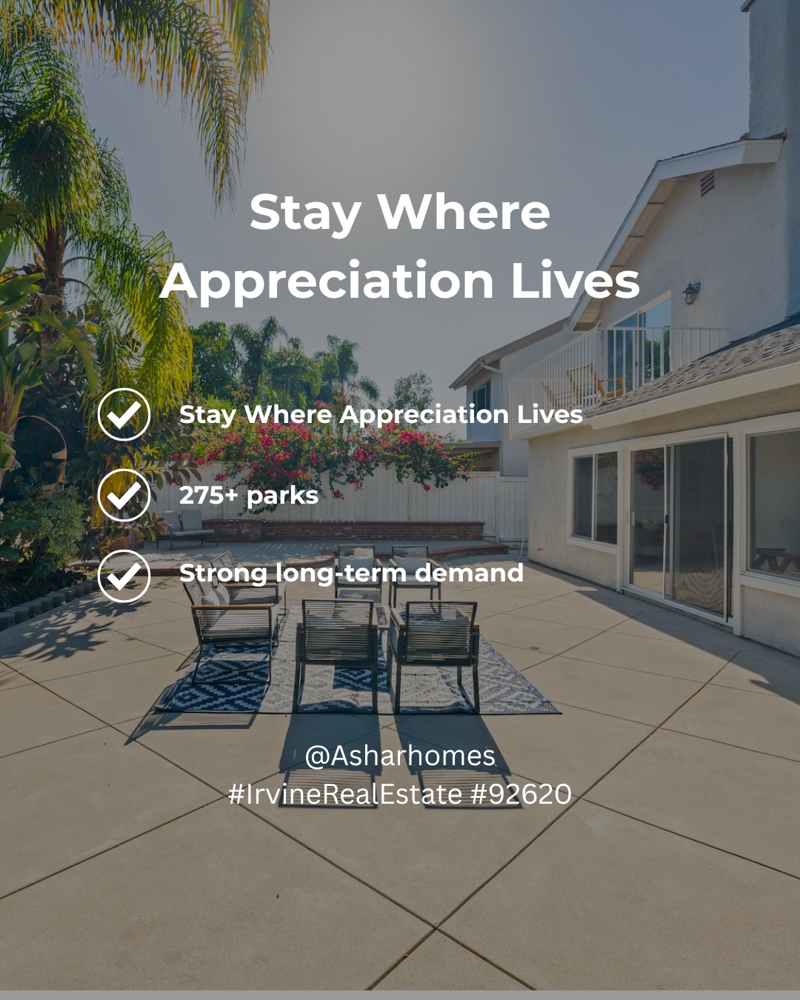
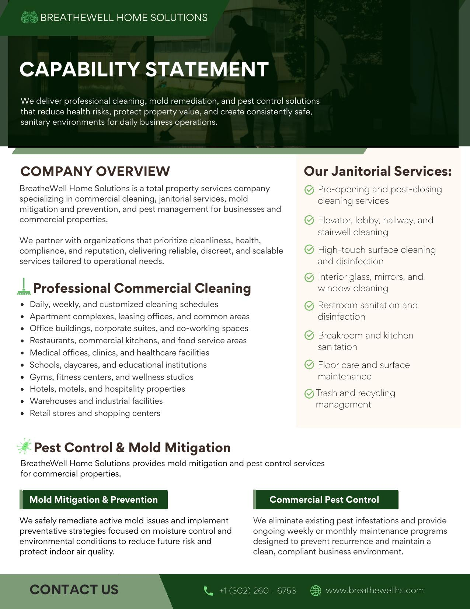
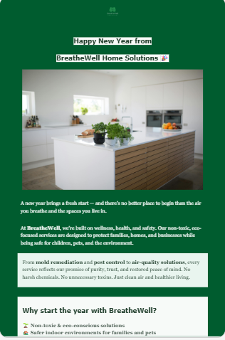
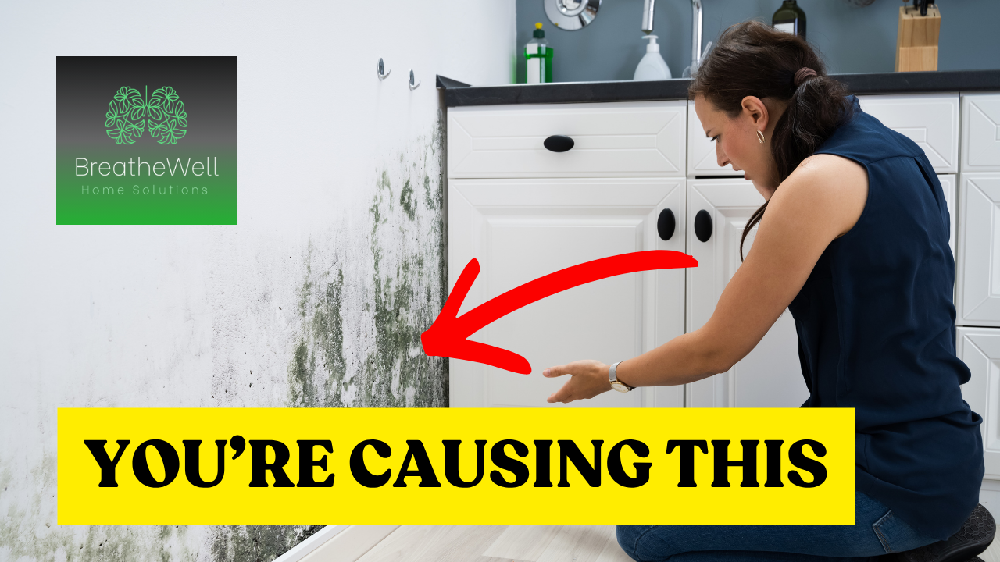
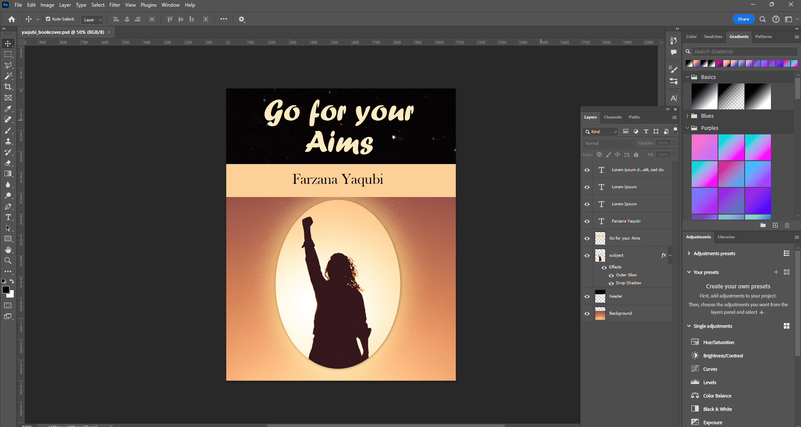
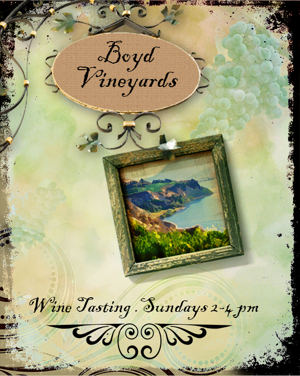

Frontend
- HTML5 & CSS3
- JavaScript (ES6+)
- React learning
- Responsive / accessible UI
Web Developer · Tacoma, WA
... AAS in Web Development with AI ...
AAS in Web Development with AI from Highline College. I write frontend interfaces and backend logic, integrate REST APIs, and use AI tooling to move faster — currently building that experience through hands-on projects — including an AI-powered caption generator — and a self-paced backend engineering internship.
01
I'm a recent graduate with an Associate of Applied Science in Web Development with AI from Highline College. I build responsive frontend interfaces and contribute to backend logic — REST APIs, database work — and I use AI tools deliberately, as part of my workflow rather than a shortcut around learning. I'm actively working toward full-stack fluency through real project work.
Before development, I spent time inside a marketing organization managing content and campaigns. That background is useful now in a specific way: I understand what marketing teams actually need from the software built for them — something that directly shaped a social media automation project I worked on during my internship at Agilis USA.
02
03
Personal project — React practice
React app that generates social media captions with customizable tone and a save/favorite feature, built to strengthen React fundamentals — state management, controlled forms, and component composition — after first working with React during my Agilis USA internship. Uses a mock-first architecture: the OpenAI integration is fully built but intentionally returns mocked responses rather than live API calls, keeping the project runnable without ongoing API costs.
Self-paced practice project — Fly Rank AI
Built a CRUD Task Manager API and progressively evolved its storage layer across three versions: in-memory, SQLite with a repository-pattern architecture, and PostgreSQL running in Docker. Swapping SQLite for Postgres required only a new repository class and a two-line dependency change — routes and service logic never changed. Verified persistence at each stage, including confirming data survives a full container teardown via Docker Compose, since Postgres's data lives in a named volume, not the container itself.
2-month internship practice project
Practice project assigned during my Agilis USA internship, simulating a social media automation platform for real estate marketing. My first hands-on project with React — I built the UI and contributed to parts of the backend, using AI-assisted development throughout.
Interactive catalog that fetches product data asynchronously and renders it with reusable HTML template elements, with cart functionality built on DOM events.
PHP web application letting users assemble personalized travel packages — destinations, accommodations, and transport — through an interactive interface.
04
Fly Rank AI · Remote
Agilis USA · Remote
J Legacy Holding Co. · Remote
J Legacy Holding Co. · Remote
05
Highline College · Graduated 2026
Kabul University · 2016–2017
06
Click a project to explore details about my work, contributions, and learning outcomes.
Company: J Legacy Holding Co
Project: BreatheWell Home Solutions (Mold, Pest Control & Cleaning Services)
Industry: Digital Marketing / Home Services
The BreatheWell Home Solutions project required clear, structured, and trust-focused digital content to effectively communicate services such as mold inspection, pest control, and cleaning solutions. The challenge was to present these services in a simple and user-friendly way for a local service audience.
To structure service content in a clear and SEO-friendly format that improves readability, user trust, and overall digital presentation within the J Legacy Holding Co marketing system.
This project demonstrates the ability to structure and optimize digital content for service-based businesses within a marketing organization. It highlights skills in content organization, SEO awareness, and user-focused communication.
Company: Agilis USA
Role: Web Development & AI Media Intern
Project Type: Internship practice project simulating a real estate marketing automation platform
This was a training/practice project assigned during my internship — not a live system deployed for a real client. It simulated the kind of social media automation platform a real estate marketing business might use, giving me hands-on experience with the full build process.
The practice scenario simulated a common real estate marketing need: reducing manual effort in social media publishing by streamlining content creation, media generation, and publishing workflows.
To practice building an AI-powered system that assists with content creation, media processing, and automated social media publishing, as a hands-on learning exercise.
This was a defined-scope practice project completed during the internship period — it was not carried forward as an ongoing or deployed system afterward.
Type: Personal project
Purpose: React practice, built after first hands-on React experience during my Agilis USA internship
Status: Complete and deployed
Creating social media captions manually is repetitive and time-consuming, and I wanted hands-on practice with React fundamentals beyond what I'd learned during my internship — specifically state management, controlled forms, and component composition.
Build a React app that generates social media captions with customizable tone, and includes a save/favorite feature — while keeping the project fully runnable without ongoing API costs.
07
A selection of content created during my internships and academic projects, demonstrating experience in digital marketing, SEO, social media, and website content.
Created social media content for business accounts across multiple platforms, focusing on engaging visuals, clear messaging, and brand consistency. Managed a daily, multi-platform content calendar (TikTok, Instagram, YouTube) for BreatheWell Home Solutions using Buffer.
Wrote full page copy for a class project — a fictional home remodeling business site (Azada Creative Remodeling Tacoma) — including a value proposition, services description, and persuasive calls to action, with SEO-aware structure supported by SEMrush keyword research.
Note: an early class project, kept as a writing sample rather than a live demo.
Applied SEO principles while creating website and marketing content to improve search visibility and content organization.
Wrote and designed email campaigns for BreatheWell Home Solutions using Brevo, including a welcome series ("Goodbye to Mold, Pests & Mess") and seasonal sends. Identified a 26% bounce rate on one campaign, flagging list quality as an area to address before future sends.
A collection of real marketing and creative assets, including client design work, short-form video projects, and Photoshop design practice.





Designed a 5-slide Instagram carousel for Raveena Ashar (Rise Realty) in Canva — handling layout, typography, and visual hierarchy for client-provided real estate content — with a provided contact card as the final slide.

Refined client-provided content and designed a capability statement for BreatheWell Home Solutions using a Canva template.

Designed a seasonal email campaign for BreatheWell Home Solutions in Brevo, highlighting their non-toxic, eco-conscious service offerings.

Designed a scroll-stopping thumbnail for BreatheWell Home Solutions using a bold callout headline and directional visual cue to drive click-through on mold-awareness content.
Customized a CapCut video template with original photos, text, and an ElevenLabs AI voiceover — a personal project exploring AI-assisted content creation.
Edited a short-form video in CapCut using Pixabay stock footage, with custom text overlays and sound selected from CapCut's library.

Designed a book cover in Photoshop using custom typography, gradient overlays, and layer effects (outer glow, drop shadow).
Composited a multi-element photo montage in Photoshop, blending a portrait, landscape, and additional imagery into a single cohesive scene.

Designed a decorative event flyer using layered textures, ornamental graphics, and custom typography.
I use AI tools to support content creation, marketing workflows, and productivity. My experience includes experimenting with AI-assisted content generation, prompt engineering, and marketing automation while continuing to learn emerging AI technologies.
I write and refine prompts to improve AI-generated content for marketing, web development, and content planning. I continuously experiment with prompt optimization to achieve more accurate and consistent results.
08
Open to entry-level web developer roles. The fastest way to reach me is the form below or email directly.